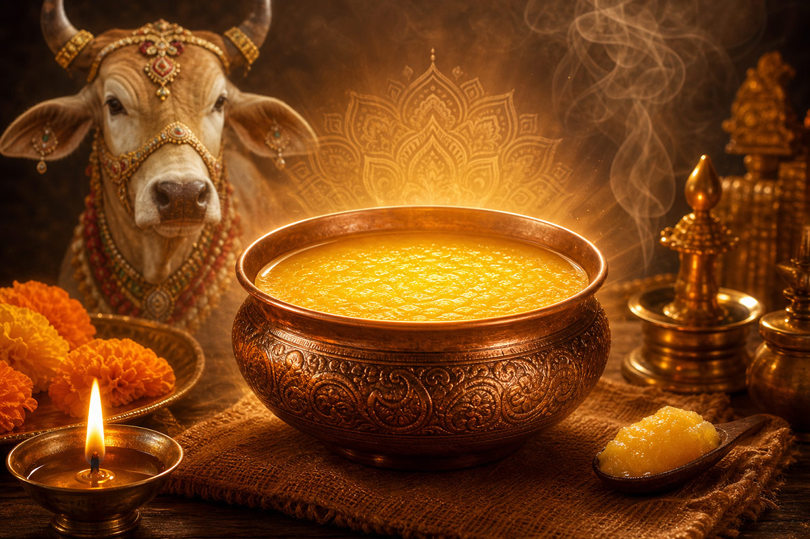
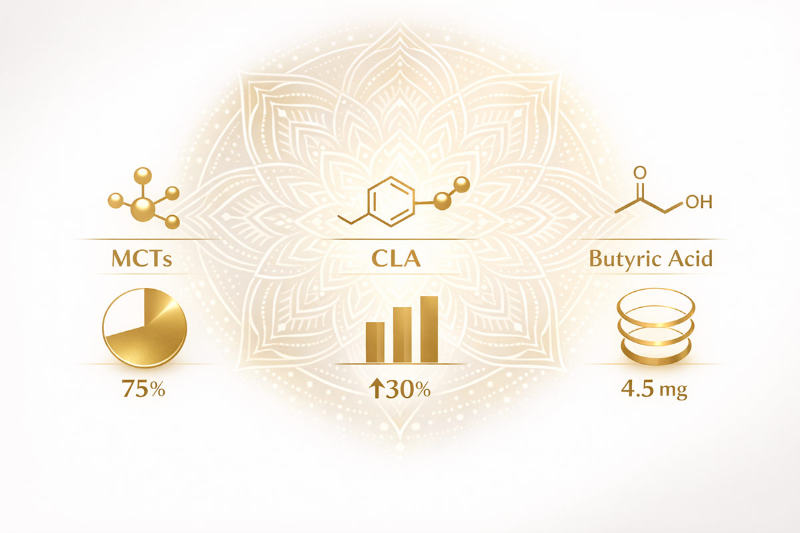
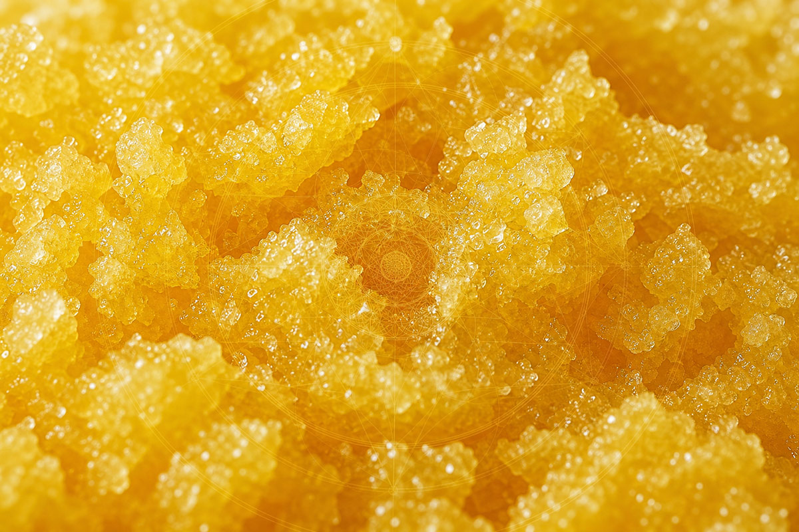
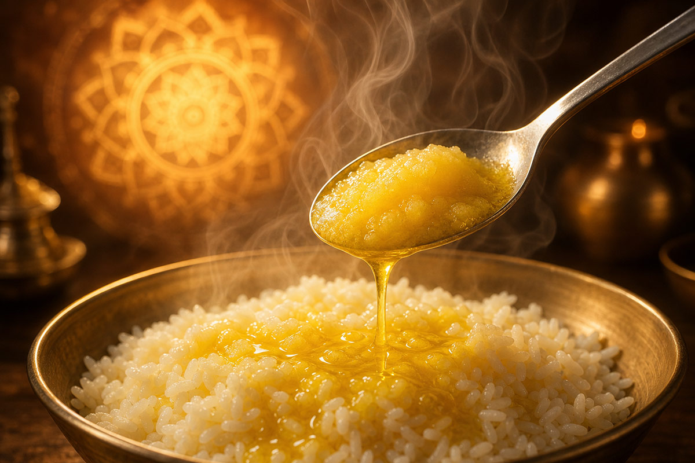

The Nourishing Carrier
From milk comes curd; from curd comes butter; from butter comes ghee — the essence of nourishment, refined by fire.
In the ancient texts of Ayurveda and the Vedic scriptures, ghee is described not merely as food, but as a sacred substance carrying immense potency. It is called amrita — nectar of immortality — because it preserves vitality, enhances memory, and supports longevity.
This page traces its story from the Vedic fire ritual to modern nutritional science — and offers practical guidance on how to bring it into your own life.
The Charaka Samhita states that pure ghee possesses "a thousand potencies" and adapts itself to balance all three doshas — vata, pitta, and kapha — when prepared correctly. Ghee forms the base of almost all classical Ayurvedic herbal preparations; it is said to be the best medium to carry the healing properties of herbs deep into the body's tissues.
In daily and ritual life, ghee is central to Abhyanga — the traditional warm oil massage — and to fire sacrifices (yajna), where it is offered to carry prayers and intentions upward. For thousands of years, it has been revered as the "sunshine of the kitchen" and the bridge between physical nourishment and spiritual well-being.
Modern research confirms what tradition has long taught: pure cow ghee is a concentrated source of easily absorbed nutrients.


Easily digested, quickly converted into energy, and supportive of healthy metabolism.
A short-chain fatty acid that supports gut health, reduces inflammation, and helps maintain the integrity of the intestinal lining.
Known for its antioxidant properties and role in supporting healthy cell function.
Rich in vitamins A, D, E, and K — all essential for skin health, immunity, bone strength, and vision.
Unlike many oils, ghee remains stable at higher temperatures, making it safe for cooking without forming harmful compounds.
Topical application supports tissue repair, soothes burns, reduces irritation, and creates a protective barrier without clogging pores.
Pure cow ghee is incredibly versatile, working both as nourishing food and a powerful skin treatment.

Take ½–1 teaspoon daily in warm drinks or meals, or use for cooking. 1–2 teaspoons per day is enough for most people.
Warm gently and apply as a full-body massage. Leave for 15–30 minutes then rinse. Best done morning or evening.
Herbs infused into ghee amplify their effects, creating a targeted healing preparation far more potent than herbs taken alone.
Just as with dung and urine, quality begins with the cow.
The best ghee comes from A2 milk, produced by traditional Indian breeds such as Gir, Sahiwal, or Tharparkar, fed on natural grass and herbs.
Made using the traditional method: churning curd into butter, then clarifying by slow heating — not just separating milk solids from cream.
Good ghee has a golden-yellow colour, a rich aroma, and a slightly grainy texture when cool. It keeps well for months or even years in a cool, dark place.
Ghee is the nourishing bridge. It supports the body to receive the benefits of the other gifts of the cow, and it stands as a powerful healer in its own right.
For full step-by-step instructions, storage advice, and how to combine ghee with other cow products — visit the dedicated How to Apply page.
How to Apply →